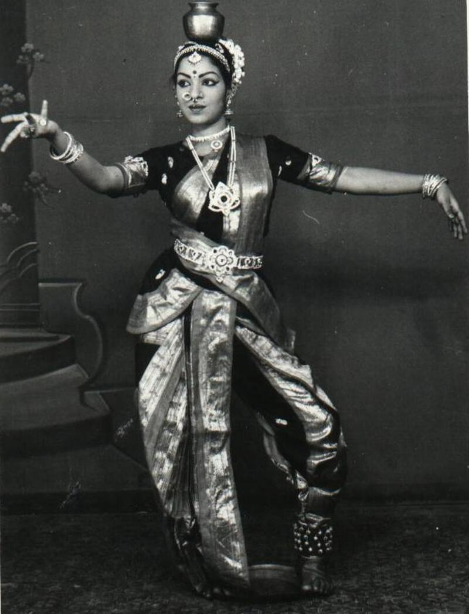
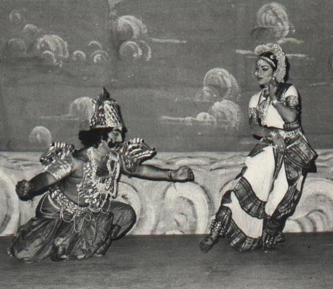
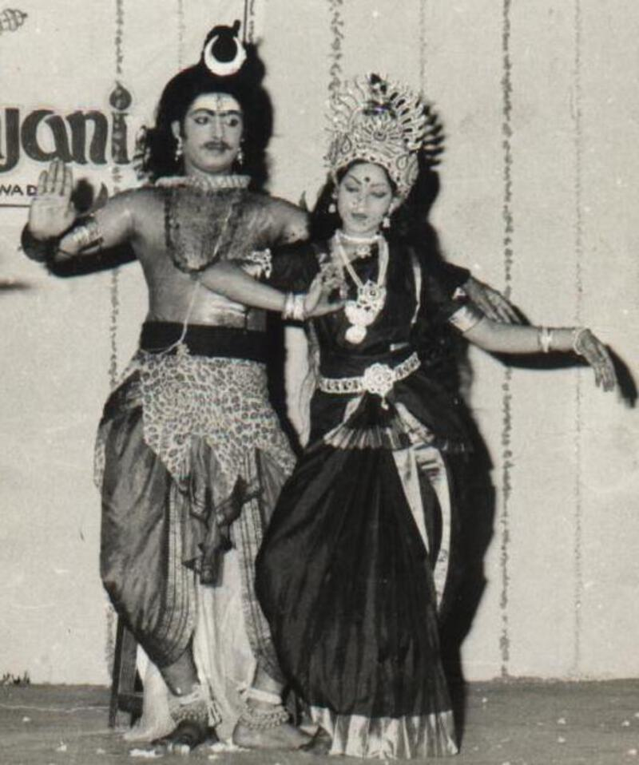
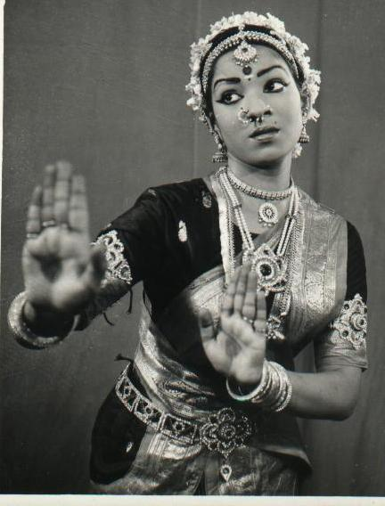

Artistic Director Hemamalini Yaddanapudi is the
founder of the Lasyam School of Kuchipudi Dance.
Hema started her first dance lessons when she was six years old. Her first Guru, Sri Bhagavthula
Yagna
Narayana Sarmagaru, hailed from the village of Kuchipudi itself. She learned her first item from
him,
called “Rara Venu Gopa Bala” at age 7. Hema studied under Sarmagaru’s tutelage and earned her
diplomas
in Kuchipudi and Bharthanatyam; which she accomplished by the time she was 15 years old. Hema also
attended the Central University of Hyderabad for the Masters of Performing Arts program for
Kuchipudi.
Hema also had the privilege of learning from Sarma garu’s son Bhagavathula Venkata Rama Sarma garu;
under his tutelage she learned popular Kuchipudi style established by Sri Vempati China Satyam garu.
Hema, throughout her childhood, heard stories about Kuchipudi from her father Y.V. Hanumatharao, a
renowned lawyer in Vijayawada, who hailed from Yaddanapudi (a town neighboring Kuchipudi). Growing
up near Kuchipudi, he experienced Kuchipudi performances in temples during various festivals. As a
child, Hema heard her father share the wonderful memories about Kuchipudi dancers and their
performances, called the Veedhi Natakam or Veedhi Bhagavatam, known as “Bhagavatha Mela Natakams”
(Stories of God), which are traditionally performed by the traveling dance troupe which consisted
entirely of men (often Brahmins). These traveling dance troupes moved from village to village and
performed near local Hindu temples.
Hema’s grandfather patronized these artists and invited them to the Yaddanapudi village, to perform
in local Ramalingeswara Temple, for Dasara and Sri Ramanavami festivals. Hema was captivated by
hearing these fascinating stories early in her life; these stories influenced her to develop a deep
passion for this art at a very young age.


As a child, Hema had the opportunity to meet with legendary gurus such as Vedantam Satyanarayana
Sarma garu and Korada Narasimha Rao garu, and many others, when they visited her father at her
childhood home to spend time with him. Her acquaintance with great Kuchipudi gurus helped Hema to
understand the history and the progression of Kuchipudi from ages to till date.
Hema's mother, Lakshmi, is also an ardent lover of music, dance, and Telegu literature. She
encouraged Hema to learn the veena, from Sri Nallamchakravathula Krishnamachari garu, a famous
violinist in Vijayawada Her mother’s knowledge in Telugu literature, guided her in understanding the
meaning of literature and lyrics in Kuchipudi songs and nourished Hema to understand the Bhavam
(emotion) and Abhinayam (expression) in the lyrics, which helped her to connect with the divinity in
Kuchipudi in greater depth.

Hema founded the Lasyam School of Kuchipudi Dance in 2000 and has since trained many students and
choreographed numerous Kuchipudi dance recitals, dramas, and Rangapravesams (solo graduation dance
performances).
Lasyam collaborated with legendry guru Pasumarthy Ramalinga Satry garu to bring the famed Kuchipudi
ballet, “Bhamakalapam,” to Chicago. Her students were given the rare opportunity to learn from a
living Kuchipudi legend. In addition to working with a legendary guru, Lasyam students have
performed with an internationally acclaimed live orchestra for their Rangaprevesams.
In addition to earning her certifications in Kuchipudi, Hema graduated from Nagarjuna University
with B.A.B.L. She was also selected to serve as a Judge in Andhra Pradesh, India in 1998.
Hema earned a Masters of Law degree from Texas Tech University in 2016. Currently, Hema works at a
non-profit legal aid organization, which provides representation to residents of DuPage County.
